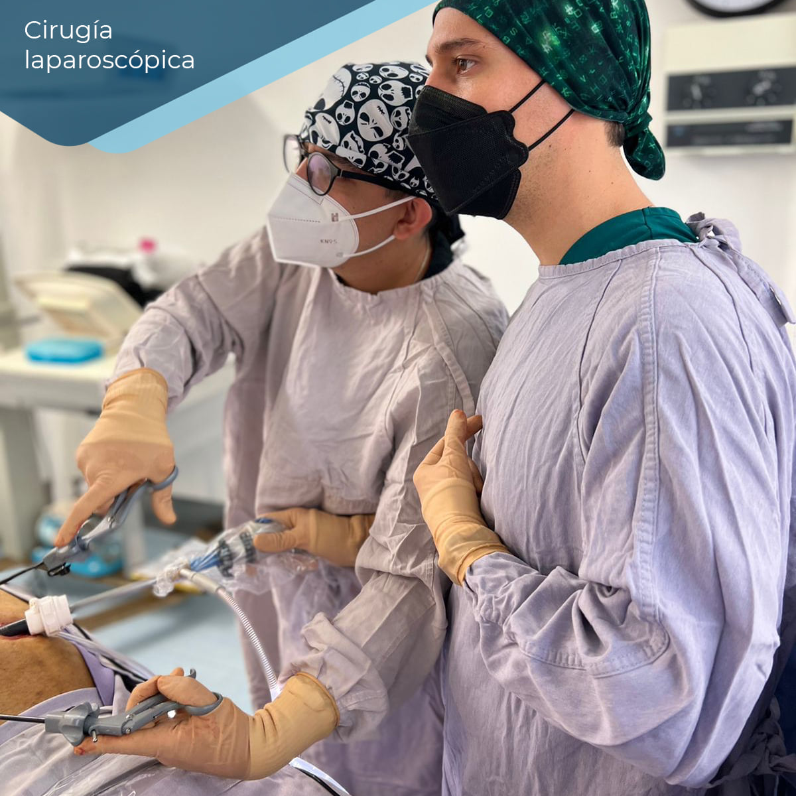

Acerca de mi

Médico Cirujano por la Universidad de Guadalajara.
Especialista en Cirugía General por la Universidad de Guanajuato.
Subespecialista en Cirugía Oncológica por la Universidad de Guadalajara.
Especialista en Cirugía General por la Universidad de Guanajuato.
Subespecialista en Cirugía Oncológica por la Universidad de Guadalajara.

Estoy a tus órdenes para al manejo de trastornos gastrointestinales, cirugía de mínima invasión, plastías de hernias y tratamiento oportuno del cáncer 🥼🦀